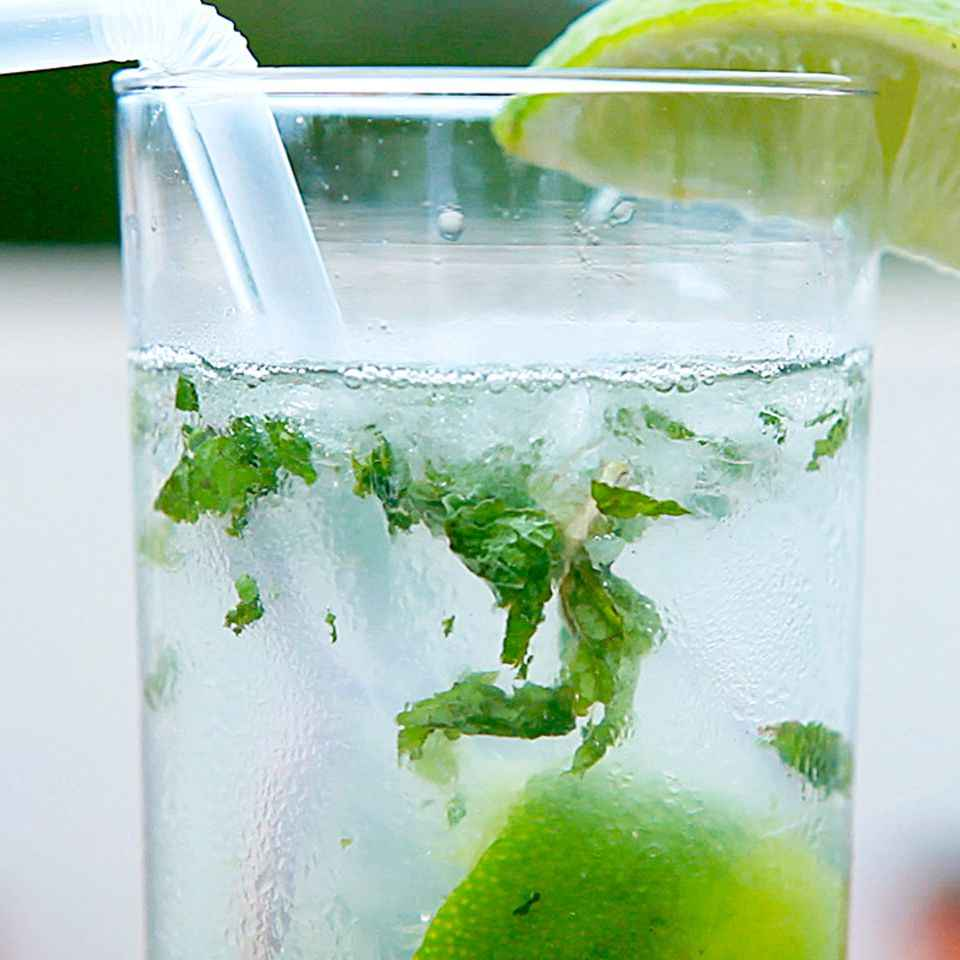

Cuban Mojito

Description
This Cuban mojito is very similar to the drinks I enjoyed in Varadero, Cuba. The muddling and the order of the
ingredients helps ensure that all the flavors are well blended. Serve with a straw and a decorative stir stick
to keep the different flavors well mixed together.
Prep Time: 10 mins
Total Time: 10 mins
Servings: 2
Ingredients
- 2 teaspoons white sugar
- 1 lime, cut into 4 wedges
- 4 sprigs fresh mint
- 2 cups crushed ice, or as needed
- 1/2 cup white rum
- 2 cups club soda
Steps to Follow
- Place 1 teaspoon sugar each into two 12-ounce glasses. Squeeze juice from a lime wedge into each glass and
drop in the wedge. Place 2 mint sprigs into each glass. Use a spoon or muddler to mash lime mixture together
in the bottom of the glasses.
- Fill each glass about half full with crushed ice. Pour 1/4 cup rum into each glass. Fill the glasses with
club soda, stir, and garnish with remaining lime wedges.
Recipe Tips
You can garnish with mint sprigs instead of lime wedges.
Back to home page